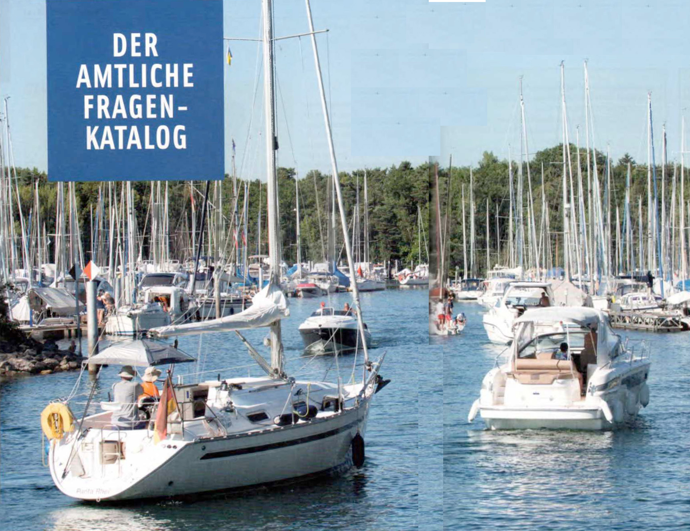

DER AMTLICHE FRAGENKATALOG
DIE 253 PRÜFUNGSFRAGEN MIT ANTWORTEN
Dies ist der offizielle Prüfungsfragenkatalog des Ministeriums für Verkehr und digitale Infrastruktur; Abteilung
Wasserstraßen,
Schifffahrt. Er besteht aus 72 Basisfragen und 181 spezifischen Fragen Binnen. Aus diesem Fragenkomplex werden 15
verschiedene Prüfungsfragebogen
zu je 30 Fragen zusammengestellt (7 Basisfragen und 23 spezifische Fragen Binnen). Geprüft wird im
Single-Choice-Verfahren (Antwort-Auswahl-Verfahren)
vom Deutschen Motoryachtverband und vom Deutschen Segler-Verband. Zu jeder Frage gibt es vier vorgegebene Antworten.
Nur eine davon ist richtig und in der Prüfung
anzukreuzen. Hier ist die richtige Antwort mit einem grünen Häkchen versehen. Nur diese Antwort brauchen Sie sich
zu merken.
Innerhalb von 45 Minuten müssen mindestens 23 der 30 Antworten richtig angekreuzt werden. Dabei ist zu beachten,
dass
5 der 7 Basisfragen und 18 der 23 spezifischen Fragen Binnen korrekt beantwortet werden müssen. Wird diese
Mindestanforderung
auch nur in einem der Teilbereiche nicht erreicht, gilt die gesamte theoretische Prüfung als nicht bestanden.
BASISFRAGEN
ELWIS BASISFRAGEN
Anmerkung:
Antwort a ist immer die richtige.
1. Was ist zu tun, wenn vor Antritt der Fahrt nicht feststeht, wer Schiffsführer ist?
- Der verantwortliche Schiffsführer muss bestimmt werden.
- Der verantwortliche Schiffsführer muss gewählt werden.
- Ein Inhaber eines Sportbootführerscheins muss die Fahrzeugführung übernehmen.
- Ein Inhaber eines Sportbootführerscheins muss die Verantwortung übernehmen.
2. In welchen Fällen darf weder ein Sportboot geführt noch dessen Kurs oder Geschwindigkeit selbstständig bestimmt
werden?
- Wenn man infolge körperlicher oder geistiger Mängel oder infolge des Genusses alkoholischer Getränke oder
anderer berauschender Mittel in der sicheren Führung behindert ist oder wenn eine Blutalkoholkonzentration von 0,5
‰ oder mehr im Körper vorhanden ist.
- Wenn man infolge körperlicher oder geistiger Mängel oder infolge des Genusses alkoholischer Getränke oder
anderer berauschender Mittel in der sicheren Führung behindert ist oder wenn eine Blutalkoholkonzentration von 0,8
‰ oder mehr im Körper vorhanden ist.
- Wenn man infolge körperlicher oder geistiger Mängel oder infolge des Genusses alkoholischer Getränke oder
anderer berauschender Mittel in der sicheren Führung behindert ist oder wenn eine Blutalkoholkonzentration von 1,0
‰ oder mehr im Körper vorhanden ist.
- Wenn man infolge körperlicher oder geistiger Mängel oder infolge des Genusses alkoholischer Getränke oder
anderer berauschender Mittel in der sicheren Führung behindert ist oder wenn eine Blutalkoholkonzentration von 0,3
‰ oder mehr im Körper vorhanden ist.
3. Wann ist ein Fahrzeug in Fahrt?
- Wenn es weder vor Anker liegt noch an Land festgemacht ist noch auf Grund sitzt.
- Wenn es weder vor Anker liegt noch an Land festgemacht ist noch Fahrt über Grund macht.
- Wenn es weder auf Grund sitzt noch vor Anker liegt noch manövrierbehindert oder manövrierunfähig ist.
- Wenn es weder an Land festgemacht ist noch vor Anker liegt noch Fahrt durchs Wasser macht.
4. Wie lang ist die Dauer eines kurzen Tons (

)?
- Etwa 1 Sekunde.
- Etwa 2 Sekunden.
- Weniger als 1 Sekunde.
- Weniger als 4 Sekunden.
5. Wie lang ist die Dauer eines langen Tons (

)?
- Etwa 4 - 6 Sekunden.
- Etwa 2 - 6 Sekunden.
- Etwa 1 - 2 Sekunden.
- Etwa 6 - 8 Sekunden.
6. Wann gilt ein Fahrzeug unter Segel als Maschinenfahrzeug?
- Wenn es gleichzeitig mit Maschinenkraft fährt.
- Wenn es mit einer Antriebsmaschine ausgerüstet ist.
- Wenn es durch das Segeln keine Fahrt durchs Wasser macht.
- Wenn es durch das Segeln keine Fahrt über Grund macht.
7. Welches Signal führt ein Fahrzeug unter Segel, das als Maschinenfahrzeug gilt, zusätzlich am Tage?
- Einen schwarzen Kegel, Spitze unten.
- Einen schwarzen Kegel, Spitze oben.
- Einen schwarzen Rhombus.
- Zwei schwarze Bälle senkrecht übereinander.
8. Welche Seite wird als Luvseite bezeichnet?
- Die dem Wind zugekehrte Seite.
- Die dem Wind abgewandte Seite.
- Die Seite in Fahrtrichtung rechts.
- Die Seite in Fahrtrichtung links.
9. Welche Seite wird als Leeseite bezeichnet?
- Die dem Wind abgewandte Seite.
- Die dem Wind zugekehrte Seite.
- Die Seite in Fahrtrichtung rechts.
- Die Seite in Fahrtrichtung links.
10. Wann müssen die Lichter von Fahrzeugen geführt oder gezeigt werden?
- Von Sonnenuntergang bis Sonnenaufgang und bei verminderter Sicht.
- Von Sonnenaufgang bis Sonnenuntergang und bei verminderter Sicht.
- Von abends 18:00 Uhr bis morgens 06:00 Uhr und bei verminderter Sicht.
- Bei Dunkelheit, schlechtem Wetter und verminderter Sicht.
11. Wozu dient die Lichterführung?
- Sie zeigt Fahrtrichtung und Lage eines Fahrzeugs an.
- Sie zeigt Kurs und Geschwindigkeit eines Fahrzeugs an.
- Sie zeigt Fahrtrichtung und Position eines Fahrzeugs an.
- Sie zeigt Fahrtrichtung und Kurs eines Fahrzeugs an.
12. Was für eine Laterne kann ein Segelfahrzeug von weniger als 20 m Länge anstelle der
Seitenlichter und des Hecklichtes führen?
- Eine Dreifarbenlaterne an oder nahe der Mastspitze.
- Eine Zweifarbenlaterne an gut sichtbarer Stelle.
- Eine Dreifarbenlaterne an gut sichtbarer Stelle.
- Eine Zweifarbenlaterne an oder nahe der Mastspitze.
13. Welche Lichter muss ein Fahrzeug unter Segel, das gleichzeitig mit Maschinenkraft fährt, führen?
- Die für ein Maschinenfahrzeug vorgeschriebenen Lichter.
- Die für ein Segelfahrzeug vorgeschriebenen Lichter.
- Zwei rote Rundumlichter senkrecht übereinander.
- Seitenlichter rot und grün und ein rotes Rundumlicht.
14. Wie weichen zwei Motorboote aus, die sich auf entgegengesetzten Kursen nähern?
- Jedes Fahrzeug muss seinen Kurs nach Steuerbord ändern.
- Jedes Fahrzeug muss seinen Kurs nach Backbord ändern.
- Es muss das luvwärtige Fahrzeug dem leewärtigen Fahrzeug ausweichen.
- Es muss das leewärtige Fahrzeug dem luvwärtigen Fahrzeug ausweichen.
15. Zwei Motorboote nähern sich auf kreuzenden Kursen. Es besteht die Gefahr eines Zusammenstoßes. Wer ist
ausweichpflichtig?
- Dasjenige Fahrzeug muss ausweichen, welches das Andere an seiner Steuerbordseite hat.
- Dasjenige Fahrzeug muss ausweichen, welches das Andere an seiner Backbordseite hat.
- Es muss das luvwärtige Fahrzeug dem leewärtigen Fahrzeug ausweichen.
- Es muss das leewärtige Fahrzeug dem luvwärtigen Fahrzeug ausweichen.
16. Welche Bedeutung hat folgendes Schallsignal?

- Bleib-weg-Signal, Gefahrenbereich sofort verlassen.
- Allgemeines Gefahr- und Warnsignal.
- Ankerlieger über 100 m Länge.
- Manövrierbehinderter Schleppverband über 200 m Länge.
17. Welche Bedeutung hat folgendes Tafelzeichen?

- Überholverbot.
- Begegnungsverbot.
- Überholverbot für Fahrzeuge unter 20 m Länge.
- Begegnungsverbot für Fahrzeuge über 20 m Länge.
18. Welche Bedeutung hat folgendes Tafelzeichen?

- Begegnungsverbot an einer Engstelle.
- Begegnungsverbot für Fahrzeuge über 12 m Länge.
- Überholverbot; mit Gegenverkehr muss gerechnet werden.
- Überholverbot für alle Fahrzeuge.
19. Welche Bedeutung hat folgendes Tafelzeichen?

- Sog und Wellenschlag vermeiden.
- Gefährdeter Strandbereich, Überspülungsgefahr; Mindestpassierabstand 100 m.
- Wasserstraße, die jederzeit sicher befahren werden kann; keine Gefahr durch Seegang.
- Wasserstraße, die nicht jederzeit sicher befahren werden kann; Gefahr durch Seegang.
20. Welche Bedeutung hat folgendes Tafelzeichen?

- Mindestabstand in Metern, der in der nachfolgenden Strecke vom Aufstellungsort der Tafel an eingehalten werden
muss.
- Maximalgeschwindigkeit in km/h, die auf der in Fahrtrichtung rechten
Fahrwasserseite nicht überschritten werden darf.
- Maximalabstand in Metern, der in der nachfolgenden Strecke vom Aufstellungsort der Tafel an eingehalten werden
muss.
- Verengung des Fahrwassers auf 40 m.
21. Welche Bedeutung hat folgendes Tafelzeichen?

- Haltegebot vor beweglichen Brücken, Sperrwerken und Schleusen.
- Dauernde Sperrung einer Teilstrecke der Wasserstraße.
- Gebot zur Abgabe eines langen Signaltons.
- Weiterfahrt für Sportfahrzeuge verboten.
22. Welche Bedeutung hat folgendes Tafelzeichen?

- Ankern verboten für alle Fahrzeuge.
- Ankern verboten für Kleinfahrzeuge unter 12 m Länge.
- Ankern verboten für Kleinfahrzeuge ab 12 m Länge.
- Ankern und Festmachen verboten.
23. Welche Bedeutung haben folgende Tafelzeichen?

")
- Festmache- und Liegeverbot.
- Festmache- und Liegeverbot für Sportboote.
- Festmache- und Liegeverbot für Sportboote über 12 m Länge.
- Festmache- und Liegeverbot für gewerbliche Schiffe.
24. Welche Bedeutung hat folgendes Tafelzeichen?
")
- Abgabe eines langen Tons.
- Abgabe eines kurzen Tons.
- Abgabe von zwei langen Tönen.
- Abgabe eines kurzen und eines langen Tons.
25. Welche Bedeutung haben folgende Tafelzeichen?

")
- Wasserflächen, auf denen mit Wasserski oder Wassermotorrädern gefahren werden darf.
- Genehmigungspflichtige Übungsstrecke für das Fahren mit Wasserski oder Wassermotorrädern.
- Fahren mit Wasserski oder Wassermotorrädern erlaubt. Wasserskiläufer und Wassermotorräder haben Vorfahrt.
- Genehmigungsfreie Übungsstrecke für das Fahren mit Wasserski oder Wassermotorrädern.
26. Welche Bedeutung hat folgendes Tafelzeichen?

- Ende einer Gebots- oder Verbotsstrecke.
- Streckenabschnitt für eine nicht frei fahrende Fähre.
- Queren des Fahrwassers ist gestattet.
- Wechseln der Fahrwasserseite ist gestattet.
27. Welche Bedeutung hat folgendes Tafelzeichen?

- Verbot der Durchfahrt und Sperrung der Schifffahrt.
- Verbot der Durchfahrt und Sperrung für Kleinfahrzeuge.
- Verbot der Durchfahrt, jedoch für Kleinfahrzeuge ohne laufende Antriebsmaschine befahrbar.
- Verbot der Durchfahrt, jedoch für Kleinfahrzeuge ohne Antriebsmaschine befahrbar.
28. Welche Bedeutung haben folgende Schifffahrtszeichen?

- Brücke, Sperrwerk oder Schleuse geschlossen.
- Anlage dauerhaft gesperrt.
- Stoppsignal für alle Fahrzeuge.
- Außergewöhnliche Schifffahrtsbehinderung.
29. Welche Bedeutung haben folgende Schifffahrtszeichen?

- Anlage dauerhaft gesperrt.
- Brücke, Sperrwerk oder Schleuse geschlossen.
- Stoppsignal für alle Fahrzeuge.
- Außergewöhnliche Schifffahrtsbehinderung.
30. Was bedeuten diese Lichter vor einer Schleuse?

- Einfahrt frei, Gegenverkehr gesperrt.
- Einfahrt frei, Schleusentor öffnet.
- Schleuse in Betrieb, auf Einfahrtsignal gemäß Reihenfolge warten.
- Schleuse in Betrieb, auf Ausfahrtsignal gemäß Reihenfolge warten.
31. Welches Merkblatt enthält Hinweise für das Verhalten zum Schutz seltener Tiere und Pflanzen sowie zur
Reinhaltung der Gewässer?
- Die 10 goldenen Regeln für Wassersportler.
- Die 15 goldenen Regeln für Wassersportler.
- Die 10 Grundregeln für Wassersportler.
- Die 15 Verhaltensregeln für Wassersportler.
32. Wie kann mitgeholfen werden, die Lebensmöglichkeiten der Pflanzen- und Tierwelt in Gewässern und Feuchtgebieten
zu bewahren und zu fördern?
- Durch umweltbewusstes Verhalten und Beachtung der "Zehn goldenen Regeln für das Verhalten von Wassersportlern in
der Natur".
- Durch umweltbewusstes Verhalten und Beachtung der "Zehn Grundregeln für den Wassersport".
- Durch umsichtiges Verhalten und Beachtung der Verkehrsvorschriften.
- Durch vorausschauendes Fahren und Ausweichen entsprechend der Verkehrsvorschriften.
33. Warum sollte man sich von Schilf- und Röhrichtzonen sowie von dicht bewachsenen Uferzonen möglichst weit
fernhalten?
- Weil diese Zonen vielfach Rast- und Brutplätze besonders schutzwürdiger Vögel oder Fischlaichplätze sind.
- Weil in diesen Zonen die Gefahr von Grundberührungen besteht.
- Weil durch die Pflanzen der Propeller blockiert werden könnte.
- Weil in diesen Zonen badende Personen schwer zu erkennen sind.
34. Warum soll ein kleines Fahrzeug nicht dicht an ein großes in Fahrt befindliches Fahrzeug heranfahren?
- Es kann durch dessen Bug- oder Heckwelle kentern oder durch den Sog mit dem Fahrzeug kollidieren.
- Dichtes Heranfahren ist ein Verstoß gegen die Grundregeln für das Verhalten im Verkehr.
- Da es dem großen in Fahrt befindlichen Fahrzeug sonst nicht ausweichen kann.
- Es kann durch dessen Bug- oder Heckwelle Seeschlag erleiden.
35. Warum soll man möglichst gegen Strom und Wind anlegen?
- Weil sich das Fahrzeug dabei sicherer manövrieren lässt.
- Weil dadurch Sog und Wellenschlag vermieden wird.
- Weil dadurch Einflüsse von Wellen und Wassertiefe ausgeglichen werden.
- Weil dies die Steuerwirkung der Schraube erhöht.
36. Wie verhält man sich beim Begegnen mit anderen Fahrzeugen in einem engen Fahrwasser?
- Geschwindigkeit herabsetzen und ausreichenden Passierabstand halten.
- Geschwindigkeit erhöhen, um das Begegnungsmanöver zügig durchzuführen.
- Das gegen den Strom fahrende Fahrzeug ist ausweichpflichtig.
- Das mit dem Strom fahrende Fahrzeug hat aufzustoppen.
37. Welche Gefahren können entstehen, wenn ein kleines von einem größeren Fahrzeug überholt wird?
- Das kleinere Fahrzeug kann durch Stau, Sog oder Schwell aus dem Kurs laufen und kollidieren oder querschlagen,
in flachen Gewässern auf Grund laufen.
- Das größere Fahrzeug kann durch Stau, Sog oder Schwell aus dem Kurs laufen und kollidieren oder querschlagen, in
flachen Gewässern auf Grund laufen.
- Das kleinere Fahrzeug kann durch Stau, Sog oder Schwell aus dem Kurs laufen und kollidieren oder kentern, in
flachen Gewässern extrem versetzt werden.
- Das größere Fahrzeug kann durch Wellenbildung aus dem Kurs laufen und kollidieren oder querschlagen, in flachen
Gewässern auf Grund laufen.
38. Wo finden Sie Informationen über umweltfreundliche Farben, Lacke und Antifouling-Beschichtungen für Ihr Boot?
- Beim Umweltbundesamt.
- Beim Bundesministerium für Digitales und Verkehr.
- In der Sportbootführerscheinverordnung.
- In der Sportbootvermietungsverordnung.
39. Woran kann man erkennen, ob der Anker hält?
- Wenn beim Handauflegen auf die Ankerkette oder -leine kein Rucken zu verspüren ist und sich die Ankerpeilung
nicht ändert.
- Wenn Ankerkette oder -leine nicht vibrieren und sich der anliegende Magnetkompasskurs nicht verändert.
- Wenn beim Handauflegen auf die Ankerkette oder -leine kein Rucken zu verspüren ist und das Fahrzeug nicht
schwojt.
- Wenn beim Handauflegen auf die Ankerkette oder -leine kein Rucken zu verspüren ist und sich die Ankerpeilung
ändert.
40. Welches ist der günstigste Anlaufwinkel beim Anlegen?
- Ein möglichst spitzer Winkel.
- Ein Winkel von 90° bis 100°.
- Ein möglichst stumpfer Winkel.
- Ein Winkel von 60° bis 70°.
41. Wie verhält sich im Allgemeinen das Schiff im Rückwärtsgang bei einem rechtsdrehenden Propeller?
- Das Heck dreht nach Backbord.
- Das Heck dreht nach Steuerbord.
- Der Kurs des Schiffes ändert sich nicht.
- Der Bug dreht nach Backbord.
42. Was bewirkt der Quickstopp?
- Unterbrechung von Zündkontakt bzw. Kraftstoffzufuhr.
- Automatisches Anlassen des Motors.
- Kurze Unterbrechung des Motorlaufs.
- Automatische Schubumkehr.
43. Was ist zu unternehmen, wenn Treibstoff oder Öl in die Bilge gelangt?
- Mit Lappen aufnehmen und umweltgerecht entsorgen.
- Räume lüften und abwarten.
- Gleichmäßig verteilen.
- Mit entsprechendem Mittel neutralisieren.
44. Was ist unter einem rechtsdrehenden Propeller zu verstehen?
- Von achtern gesehen in Vorausfahrt Drehung des Propellers im Uhrzeigersinn.
- Von vorne gesehen in Vorausfahrt Drehung des Propellers im Uhrzeigersinn.
- Von achtern gesehen in Vorausfahrt Drehung des Propellers gegen den Uhrzeigersinn.
- Von vorne gesehen in Rückwärtsfahrt Drehung des Propellers gegen den Uhrzeigersinn.
45. Was ist unter einem linksdrehenden Propeller zu verstehen?
- Von achtern gesehen in Vorausfahrt Drehung des Propellers gegen den Uhrzeigersinn.
- Von vorne gesehen in Vorausfahrt Drehung des Propellers gegen den Uhrzeigersinn.
- Von achtern gesehen in Vorausfahrt Drehung des Propellers im Uhrzeigersinn.
- Von vorne gesehen in Rückwärtsfahrt Drehung des Propellers im Uhrzeigersinn.
46. Was ist unter der indirekten Ruderwirkung (Radeffekt) des Propellers zu verstehen?
- Das seitliche Versetzen des Hecks.
- Das Versetzen nach vorne.
- Das Versetzen nach hinten.
- Das seitliche Versetzen des Bugs.
47. Weshalb ist die Kenntnis der Propellerdrehrichtung von Bedeutung?
- Sie hilft beim Manövrieren.
- Sie hilft beim Kurshalten.
- Sie hilft beim Überholen.
- Sie hilft beim Begegnen.
48. Welche Anlegeseite ist mit rechtsdrehendem Propeller empfehlenswert und warum?
- Die Backbordseite - der Radeffekt zieht das Fahrzeug an die Pier.
- Die Steuerbordseite - der Radeffekt zieht das Fahrzeug an die Pier.
- Die Steuerbord- oder Backbordseite je nach Ruderlage.
- Es gibt keine empfehlenswerte Anlegeseite.
49. Was muss beim Tanken beachtet werden?
- Motor abstellen, keine elektrischen Schalter betätigen, Vorbereitung gegen das Überlaufen von Kraftstoff
treffen, kein offenes Feuer.
- Motor in Leerlaufstellung, keine elektrischen Schalter betätigen, Vorbereitung gegen das Überlaufen von
Kraftstoff treffen, kein offenes Feuer.
- Fenster schließen, keine elektrischen Schalter betätigen, Vorbereitung gegen das Überlaufen von Kraftstoff
treffen, kein offenes Feuer.
- Motor abstellen, Feuerlöscher bereithalten, Vorbereitung gegen das Überlaufen von Kraftstoff treffen, kein
offenes Feuer.
50. Wodurch wird bei einem Fahrzeug mit Außenbordmotor und ohne Ruderanlage die Ruderwirkung erzielt?
- Durch Schraubenstrom und Richtung des Propellers.
- Durch Schraubenstrom und Anstellwinkel des Propellers.
- Durch den Schraubenwiderstand und Anstellwinkel des Propellers.
- Durch den Schraubenwiderstand und Richtung des Propellers.
51. Weshalb setzt bei einem Fahrzeug mit Einbaumaschine und starrer Welle bei Aufnahme der Rückwärtsfahrt die
Ruderwirkung erst relativ spät ein?
- Weil sie erst mit Anströmung des Ruderblattes einsetzt.
- Weil sich durch den Radeffekt ein Unterdruck am Propeller entwickelt.
- Durch den Abstand von Propeller und Ruderblatt.
- Weil sich durch den Radeffekt ein Unterdruck am Ruder entwickelt.
52. Während der Fahrt sollte die Maschinenanlage ständig überwacht werden. Worauf muss besonders geachtet werden?
- Motortemperatur, Öldruck, Ladekontrolle.
- Kühlwasseraustritt, Drehzahlmesser, Keilriemenspannung.
- Schraubendrehzahl, Getriebeöltemperatur, Öldruck.
- Druck der Einspritzpumpe, Impellerpumpe, Ölpumpe.
53. Die Temperatur der Antriebsmaschine überschreitet die zulässigen Grenzwerte. Was könnte die mögliche Ursache
sein?
- Defektes Thermostat, defekte Impellerpumpe, geschlossenes Seeventil, zu niedriger Kühlwasserstand.
- Zu viel Motoröl, defekte Impellerpumpe, geschlossenes Seeventil, zu niedriger Kühlwasserstand.
- Defektes Thermostat, defekte Impellerpumpe, geschlossenes Seeventil, zu hohe Batteriespannung.
- Defektes Thermostat, defekte Kupplung, geschlossenes Seeventil, zu niedriger Kühlwasserstand.
54. Die Ladekontrolllampe erlischt nach dem Starten nicht. Was könnte die mögliche Ursache sein?
- Lichtmaschine bzw. Regler der Lichtmaschine defekt.
- Zu hohe Motordrehzahl.
- Keilriemen gerissen und hoher Stromverbrauch.
- Anlasser ist nach dem Starten ausgefallen.
55. Die Ölkontrollleuchte leuchtet nach dem Starten weiter. Was könnte die mögliche Ursache sein?
- Druckschalter bzw. Öldruckpumpe defekt.
- Zu viel Motoröl im Motor.
- FI-Schalter defekt.
- Zu hohe Motordrehzahl.
56. Der Motor ist gestartet worden. Was kann die Ursache sein, wenn nach dem Einkuppeln der Antriebswelle der Motor
stehenbleibt?
- Blockierter Propeller.
- Blockierte Kraftstoffzufuhr.
- Verschmutzter Ölfilter.
- Verschmutzter Luftfilter.
57. Ein Außenborder mit gefülltem Tank bleibt während der Fahrt stehen. Was könnten die Ursachen sein?
- Belüftungsschraube geschlossen; verstopfte Kraftstoffleitung.
- Ansaugdüsen zu groß bzw. zu klein.
- Tankdeckel ist offen.
- Schraube an der Welle lose.
58. Welche Veröffentlichungen enthalten wichtige Regeln und Tipps für Wassersportler, Empfehlungen zur Ausrüstung
von Sportbooten sowie Hinweise zu umweltgerechtem Verhalten auf dem Wasser?
- Nautische Publikationen wie „Sicherheit auf dem Wasser“ und „Sicher auf See".
- Verordnung über die Sicherung der Seefahrt und nautische Publikationen wie „Sicher auf See".
- Nautische Publikation wie „Sicherheit auf dem Wasser“ und Internationales Signalbuch.
- Internationales Signalbuch und Verordnung über die Sicherung der Seefahrt.
59. Unter welchen Voraussetzungen darf ein Sportboot mit Elektromotor ohne Fahrerlaubnis geführt werden?
- Die Antriebsleistung beträgt höchstens 7,5 Kilowatt Betriebsart S1 (Dauerbetrieb).
- Es darf immer ohne Fahrerlaubnis geführt werden, unabhängig von der Antriebsleistung.
- Bis zu einer Antriebsleistung von 11,03 Kilowatt Betriebsart S1 (Dauerbetrieb).
- Es darf nie ohne Fahrerlaubnis geführt werden, unabhängig von der Antriebsleistung.
60. Welche Vorkehrungen sind für das längere Verlassen des Fahrzeugs zu treffen?
- Alle Seeventile schließen und den Hauptschalter des Bordnetzes ausschalten.
- Kraftstoff- und Wassertank auffüllen und das Bordnetz aufladen.
- Tagestank schließen und Kraftstofffilter entwässern.
- Fahrzeug seefest hinterlassen und den Hafenmeister verständigen.
61. Wie ist ein enges Gewässer zu befahren, wenn man sich am Ufer festgemachten Fahrzeugen nähert?
- Verringerung der Geschwindigkeit, um schädlichen Sog und Wellenschlag zu vermeiden.
- Beibehaltung der Geschwindigkeit, um durch Gleitfahrt schädlichen Sog und Wellenschlag auszuschließen.
- Verringerung der Geschwindigkeit und nötigenfalls vom Rechtsfahrgebot abweichen.
- Auf Höhe der festgemachten Fahrzeuge aufstoppen und überprüfen, dass kein Dritter behindert oder geschädigt
wird.
62. Wo sollen die Gasbehälter einer Flüssiggasanlage gelagert werden?
- Möglichst an Deck, geschützt vor Sonneneinstrahlung, sonst in einem besonders abgeschlossenen Raum für
Gasbehälter, der in Bodenhöhe eine Öffnung nach außenbords hat.
- Möglichst unten im Schiff, geschützt vor Sonneneinstrahlung, sonst in einem besonders abgeschlossenen Raum für
Gasbehälter, der in Bodenhöhe eine Öffnung nach außenbords hat.
- Möglichst auf dem Vorschiff, geschützt vor Sonneneinstrahlung, sonst in einem besonders abgeschlossenen Raum für
Gasbehälter, der in Bodenhöhe eine Öffnung nach außenbords hat.
- Möglichst an Deck, geschützt vor Sonneneinstrahlung, sonst in einem besonders abgeschlossenen Raum für
Gasbehälter, der oben belüftet ist.
63. Warum sind die Flüssiggase Propan und Butan an Bord besonders gefährlich?
- Beide Gase sind schwerer als Luft und bilden mit Luft ein explosives Gemisch.
- Beide Gase sind leichter als Luft und bilden mit Luft ein explosives Gemisch.
- Beide Gase sind schwerer als Wasser und bilden mit Wasser ein explosives Gemisch.
- Beide Gase sind schwerer als Luft und bilden mit Wasser ein explosives Gemisch.
64. Was ist zu tun, wenn Flüssiggas in das Innere des Bootes gelangt?
- Gaszuführung absperren und für Lüftung sorgen. Außerdem keine elektrischen Schalter betätigen und keinen Funk
und keine Mobiltelefone benutzen.
- Gasleitung entleeren und für Lüftung sorgen. Außerdem keine elektrischen Schalter betätigen und keine Telefone
benutzen.
- Gaszuführung absperren und für Lüftung sorgen. Außerdem keine elektrischen Schalter betätigen und per Telefon
Hilfe holen.
- Gasleitung entleeren und die Gasfreiheit mit dem Feuerzeug prüfen sowie über Funk oder Mobiltelefon Hilfe
anfordern.
65. Was ist vor Inbetriebnahme einer Flüssiggasanlage zu prüfen?
- Die Anlage muss abgenommen sein, Leitungen und Anschlüsse müssen dicht sein. Haupthahn und andere Absperrventile
sind zu öffnen.
- Die Anlage muss abgenommen sein, die Inbetriebnahme darf nur durch eine besonders geprüfte Person
erfolgen.
- Die Anlage muss abgenommen sein und jährlich überprüft werden. Die Inbetriebnahme darf nur durch eine besonders
geprüfte Person erfolgen.
- Die Abnahme der Anlage darf nicht länger als drei Jahre zurückliegen. Haupthahn und andere Absperrventile sind
zu öffnen.
66. Was ist zu beachten, wenn eine Flüssiggasanlage außer Betrieb gesetzt wird?
- Haupthahn und Absperrventile sind zu schließen.
- Die Anlage ist gasfrei zu machen.
- Gasflasche fachgerecht entsorgen.
- Der Flüssiggasbehälter ist vollständig zu entleeren.
67. Wie oft muss man aufblasbare Rettungsmittel warten lassen?
- Entsprechend der Herstellerangabe, mindestens alle 2 Jahre.
- Jährlich und nach jedem Einsatz oder Übungsgebrauch.
- Entsprechend der Herstellerangabe, mindestens alle 3 Jahre.
- Jährlich, jeweils vor Beginn der Wassersportsaison.
68. Welcher Feuerlöscher ist für Sportboote zweckmäßig und wie oft muss man einen Feuerlöscher überprüfen lassen?
- ABC-Pulver- und
Schaumlöscher, mindestens alle 2 Jahre.
- Feuerlöscher mit Löschschaum, mindestens einmal pro Jahr.
- CO2-Feuerlöscher, mindestens alle 2 Jahre.
- ABC-Pulverlöscher, mindestens einmal pro Jahr.
69. Welche Maßnahmen muss man ergreifen, um einen Brand mit dem Feuerlöscher wirksam zu bekämpfen?
- Luftzufuhr verhindern, Feuerlöscher erst am Brandherd einsetzen und das Feuer möglichst von unten
bekämpfen.
- Rauchabzug sicherstellen und Feuerlöscher rechtzeitig einsetzen, dabei den Löschstrahl möglichst in die
lodernden Flammen halten.
- Luftzufuhr verhindern und den Feuerlöscher mit sparsamen Löschstrahlstößen einsetzen, dabei das Feuer möglichst
von oben bekämpfen.
- Handhabungshinweise durchlesen und den Feuerlöscher sofort einsetzen, dabei das Feuer möglichst von unten
bekämpfen.
70. Wie hat man sich nach einem Zusammenstoß zu verhalten?
- Hilfe leisten und so lange am Unfallort bleiben, bis ein weiterer Beistand nicht mehr erforderlich ist; alle
erforderlichen Daten austauschen.
- Hilfe leisten und so lange am Unfallort bleiben, bis ein weiterer Beistand nicht mehr erforderlich ist; die
Wasserschutzpolizei benachrichtigen.
- Hilfe leisten und so lange am Unfallort bleiben, bis ein weiterer Beistand nicht mehr erforderlich ist;
Notsignal geben.
- Hilfe leisten und so lange am Unfallort bleiben, bis ein weiterer Beistand nicht mehr erforderlich ist;
Verschlusszustand herstellen.
71. Welche Faktoren sind hauptsächlich für das Wettergeschehen, also für Wind und Niederschläge, ausschlaggebend?
- Luftdruckänderung, Luftfeuchtigkeit und Temperatur.
- Luftdruckänderung, Sonneneinstrahlung und Höhenlage.
- Luftdruckänderung, Luftfeuchtigkeit und Jahreszeit.
- Luftdruckänderung, Tageszeit und Temperatur.
72. In welcher Situation dürfen Notsignale gegeben werden?
- Wenn Gefahr für Leib oder Leben von Personen besteht und daher Hilfe benötigt wird.
- Wenn Gefahr für Leib oder Leben von Personen besteht oder das Schiff nicht mehr sicher manövriert werden
kann.
- Wenn Gefahr für Leib oder Leben von Personen oder erhebliche Sachwerte besteht und daher Hilfe benötigt
wird.
- Wenn Gefahr für Leib oder Leben von Personen, erhebliche Sachwerte oder die maritime Umwelt besteht.
Zurück Inhalt Vorwärts